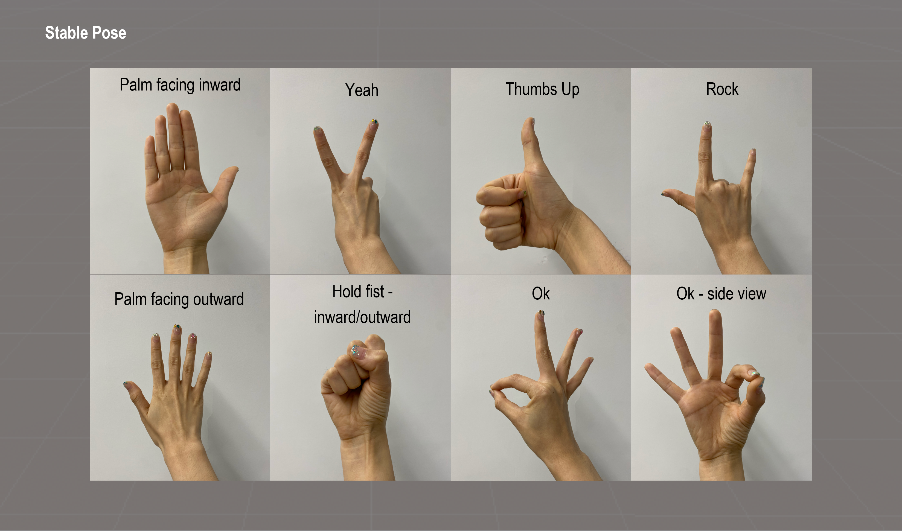
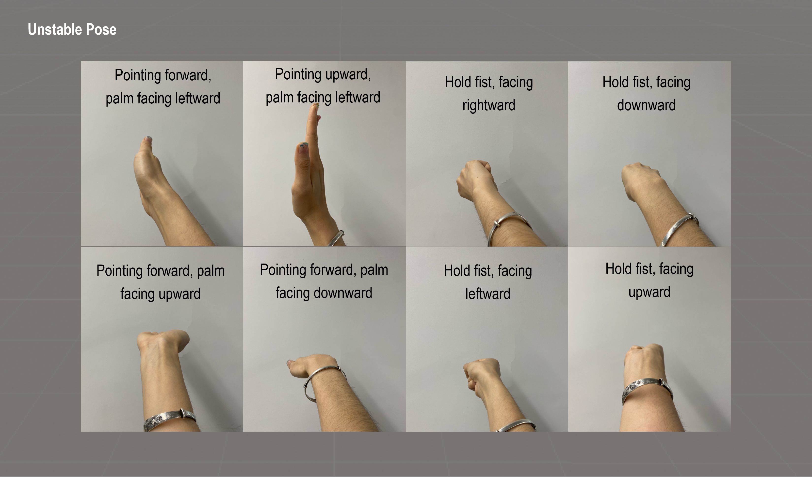
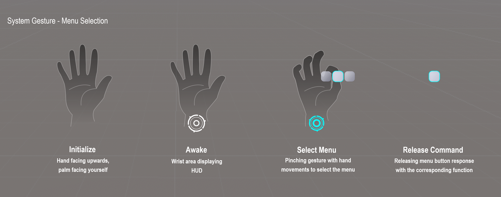

Hand Gesture Limitation
This document puts some constraints on the boundaries of application in gesture recognition to avoid some common recognition errors. It is divided into three parts:
- Part I: Static gestures, it ontains the recommended gestures and non-recommended gestures;
- Part II: Dynamic gestures, it describes the different hand movements;
- Part III: YVR system gestures, it is recommended that third-party applications avoid to use gestures that are similar to system gestures, not to be mistakenly triggered in the application.
Static Gestures
It is recommended to use a hand pose that can be done naturally and comfortably by the user, which is more ergonomic, and is also recommended at the level of gesture recognition:
Hand pose with more visible features of the hand, i.e. hand pose where more hand features can be seen.
It is recommended to use the right hand.
Refer to the following image for illustration:

Various twisted, chirpy, anti-human gestures are not recommended, as well as not recommended at the algorithmic level:
Hand poses with fewer visible hand features, i.e. hand poses where more hand features cannot be seen.
Hand poses with overlapping hands, such as crossed arms, are not recommended.
Refer to the follow image for illustration (similar hand poses (left/right) are also not recommended):

Dynamic Gestures
Dynamic gestures can be understood as: static hand pose + time-keeping judgment. Therefore in combination with the recommendations for the use of static hand shapes, gestures with rapid movements are not recommended:
- Rapidly waving various hand poses, e.g. rapidly waving of palms, fists, etc.
- Rapidly turning various hand poses, e.g., rapidly rotating of the wrist, etc.
- Rapidly executing of dynamic gestures, e.g. rapid fist clenching, rapid pinching, etc.
- Rapid movement of various hand shapes, e.g. rapid movement of various hand poes in various directions
System Gestures
It is recommended to avoid using system gestures for app interactions. This prevents triggering the system menu by mistake. The current system includes the following system gestures:
- Initialize: Hand facing upwards, palm facing yourself
- Awake: Wrist area displaying system icon - Systen is awake
- Select Menu: Pinching gesture with hand movements to select the menu
- Release command: Hovering over the button, separates the index finger and thumb, the secondary menu fades out and only the function button is displayed (flashes for a certain amount of time and then disappears), and responds to its corresponding function.
